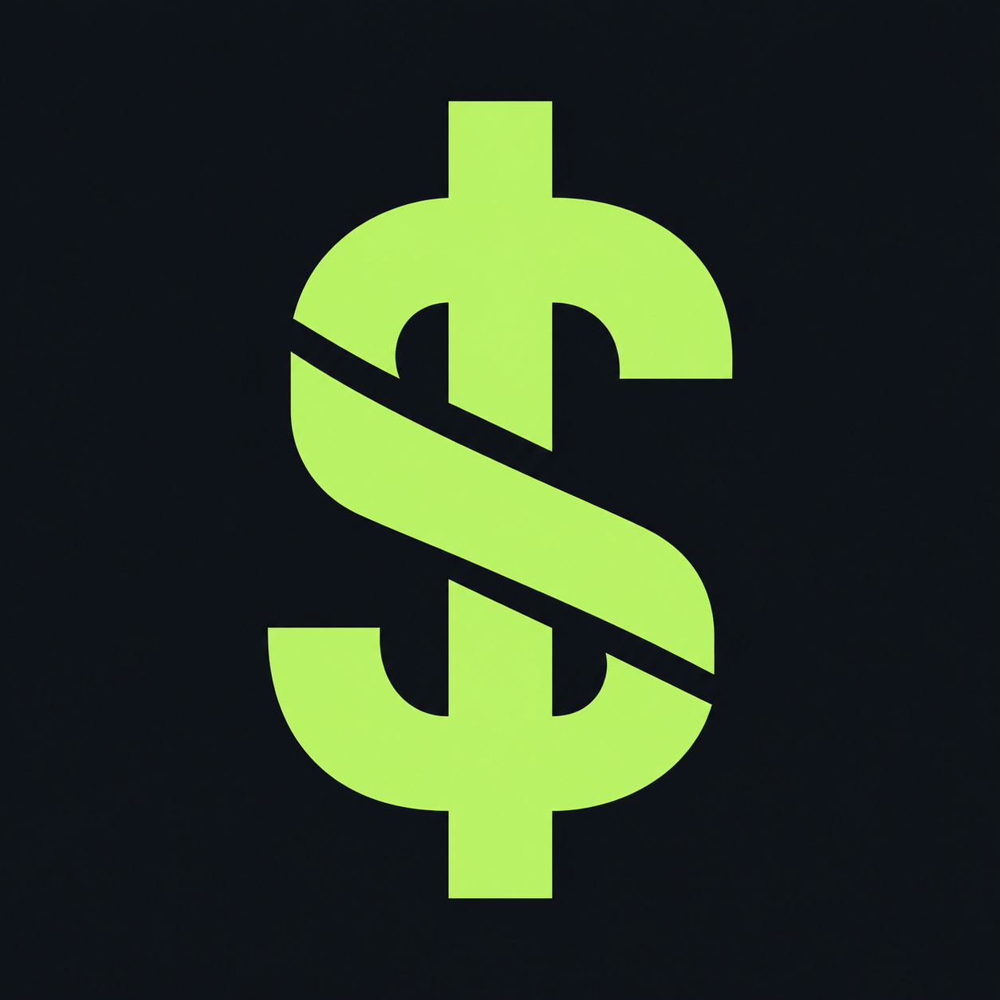

Know where your cloud spend goes.
A dollar sign, an S, and one decisive slice. The mark connects financial clarity with the act of breaking a cloud bill into costs you can understand.


The logo system


Color with a purpose
Lime identifies the brand. Red remains error and drift, amber remains caution, and green remains exact or on-budget. Data series keep their own labeled colors.
Typography
Manrope
Aa Bb Cc
800 for the wordmark and headings. 700 for cost figures. 400–600 for readable interface text. Tabular numerals align every amount.
JetBrains Mono
pip install spendslicer
i-0a18d42c
Code and machine identifiers only. Money, percentages, labels, and prose use Manrope.
Made for the product

One identity across every touchpoint
Dashboard and mobile navigation, landing page, browser tabs, README, and macOS and Windows desktop icons share the selected mark. The operational interface stays light, flat, and precise.
Download app icon · Windows · macOS
Keep the mark clear
- Keep at least one stem-width of clear space around the visible mark; use the provided canvases and lockups.
- Use the symbol at 24px or larger where possible; use the dedicated favicon at browser-tab sizes. Use horizontal lockups at 160px or larger.
- Use charcoal on white or lime. Use white or lime on charcoal. Avoid lime on white.
- Preserve the angle and width of the diagonal slice. Do not stretch, rotate, outline, add shadows, or replace the S with a typed dollar sign.
- Write the name as SpendSlicer, with both S characters capitalized.